Baba Universe 巴巴宇宙中的 2,222 位巴巴：第 1 版遇见 Turhan 和 TyroneBaba Universe NFT - 常见问题（FAQ） ▶ 什么是巴宇宙？ Baba Universe 是 NFT（替代代币）集合。存储在区块链上的数字收藏品不可收
Babies of Gods^ babyofgodd NFT - 常见问题（FAQ） ▶ 什么是上帝的宝贝？ babyofgodd 是一个 NFT（非同质代币）集合。存储在区块链上的数字收藏品集合。 ▶ 有多少个babyofgodd
Babies Of Godsz 🔱 10,000 个众神宝宝联合起来🔱 🌌 银河系最佳 NFT 合集babyofgodd NFT - 常见问题（FAQ） ▶ 什么是上帝的宝贝？ babyofgodd 是一个 NFT（非同质代币）集合。存
BABLA STUFF ED. monsta m，炽热的火焰，勇敢的风格怪物的象征，快速移动BABLA STUFF ED。NFT - 常见问题（FAQ） ▶ 什么是 BABLA STUFF ED.？ BABLA STUFF ED。是一个 NFT（替代
Baby Animals Punks 欢迎来到可爱的动物朋友社区！孩子可以是任何东西，他们是下一代的希望。 AP CREW 将这些想法融入了 AP 世界观。 ▶Animals Punks是一个基于ETH
Baby Ape Mutant Club by BABC Baby Ape Mutant Club 是以太坊区块链上的下一系列独特 NFT。这个原始的 Baby Mutant 集合包含 3333 个 NFT！ Baby Ape 的想法首先来自于修改我自己的 MAYC 的特征，同时获得其他 MAYC 所有
Baby Ape Polygon Club 猿人很无聊，想到了一个绝妙的主意。花了几个月的时间，但现在他们有了孩子。请加入我们，欢迎 Lil Baby Ape 加入俱乐部。这是 Kakashi 真正原创的 Lil Baby Ape 俱乐部。Tw
Baby Ape Prime Evolution B.A.P.E.S NFT 是一个 8K 分辨率 3D 完全渲染集合，包含 8,888 只猿猴的 Prime Evolution 准备转变为 Meta B.A.P.E.S 并进入令人兴奋的 Metaverse 新世界。该集合是随机生成和精心策划的，每个 B.A.P.E 都是独一无二
Baby Ape Px Club Baby Ape Pixel 俱乐部由 563 只独特的可爱猿组成，它们已被遗弃在像素丛林中，需要有人照顾它们。Baby Ape Px Club NFT - 问题常见（FAQ） ▶ 什么是 Baby Ape Px 俱乐部？ Baby
Baby Bokis Bokis 决定开始找点乐子，现在有 5555 个婴儿 bokis 在以太坊区块链周围漫游。Baby Bokis NFT - 常见问题（FAQ） ▶ 什么是婴儿 Bokis？ Baby Bokis 是一个 NFT（不可替
Baby Camels Season 1 小骆驼第 1 季小骆驼第 1 季 NFT - 常见问题 (FAQ) ▶ 什么是小骆驼第1季？ Baby Camels Season 1 是一个 NFT（非同质代币）系列。存储在区块链上的数字收藏品系列。 ▶ 有多少
Baby CyberGorillas 一个由 3333 名 CyberGorillas 组成的部落在丛林中秘密工作，以开发强大的 JungeSerum。食用后，将生产一个 Baby CyberGorilla。我们 P2E 生态系统的一部
Baby CyberGorillas V2 一个由 3333 名 CyberGorillas 组成的部落在丛林中秘密工作，以开发强大的 JungeSerum。食用后，将生产一个 Baby CyberGorilla。我们 P2E 生态系统的一部
Baby Devs NFT (OFFICIAL) Baby Devs NFT 是在以太坊区块链上狂奔的 6,666 名 Baby Devs 的集合，将所有销售利润的 15% 捐赠给专注于消除儿童饥饿的儿童慈善机构 No Kid Hungry。Baby Devs NFT 致力于慈
Baby Doge Army Genesis Baby Doge Army NFT - 常见问题（FAQ） ▶ 什么是小狗狗军？ Baby Doge Army 是一个 NFT（非同质代币）系列。存储在区块链上的数字收藏品集合。 ▶ 存在多少 Baby Doge Army 代币？ 3
Baby Doge Army PRESALE Baby Doge Army NFT - 常见问题（FAQ） ▶ 什么是小狗狗军？ Baby Doge Army 是一个 NFT（非同质代币）系列。存储在区块链上的数字收藏品集合。 ▶ 存在多少 Baby Doge Army 代币？ 3
Baby Doodle Punks Official Baby Doodle Punks - 围绕以太坊区块链梦想的 5,555 个 Baby Doodle Punks 的集合。Baby Doodle Punks 官方 NFT - 问题常见 (FAQ) ▶ 什么是婴儿派对朋克官方？ Baby Doodle Punks Official 是一个 NFT（非同质代币）系
Baby Dragoons Baby Dragoons 是 1000 名 Dragoons 的集合，专注于社区和实用程序Baby Dragoons NFT - 常见问题（FAQ） ▶ 什么是小龙骑兵？ Baby Dragoons 是一个 NFT（不可替代代币）系列。存储在区块链
Baby Duck Incubator Baby Duck Pond NFT - 常见问题（FAQ） ▶ 什么是小鸭池？ Baby Duck Pond 是一个 NFT（Non-fungible token）集合存储。在区块链上的数字收藏品集合。 ▶
Baby Duck Pond BDP 是 3146 个独特的 Baby Duck NFT 的集合——生活在以太坊区块链上的独特数字收藏品🐣Baby Duck Pond NFT - 常见问题（FAQ） ▶ 什么是小鸭池？ Baby Duck Pond 是一个 NFT（N
Baby Ethalien Baby Ethaliens 是 Ethaliens.Ethalien 的后代Baby Ethalien NFT - 常见问题（FAQ） ▶ 什么是婴儿Ethalien？ Baby Ethalien 是一个 NFT（不可替代代币）系列。存储在区块链上的数字收藏品
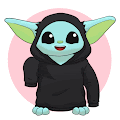 Baby Gaming Hodla Baby Gaming Hodlas 是稀有而独特的生物，用于在元宇宙中相互竞争。这是一个手绘生成集合，其中包含赛车游戏（马里奥卡丁车风格）、Merch Drop 和空投 Companion NFT 给 3 个或
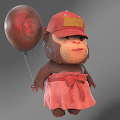 Baby Kongz Official 💫 你能相信你可以通过 Meta Kongz 项目开创一个新的乌托邦来改变世界吗？一万孔兹的世界是一个多宇宙，孔兹无处不在。你想一起改变世界吗？💥天才开发者Lee
Baby Medicated Mice 由于 staking，持有人数量不准确。我们的第 2 代小老鼠系列由 1,420 个独特的算法生成的 NFT 组成。这些婴儿具有每天高达 200 倍 $DISPO 的利润丰厚的质押能力！我
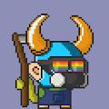 Baby Monkey Crypto Club 总共 4444 只小猴子，合约是 gas 优化的。希望您能找到并享受最好的收藏。Baby Monkey Crypto Club NFT - 常见问题（FAQ）过去 7 天没有售出 Baby Monkey Crypto Club。 ▶ 什么是猴
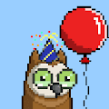 Baby MoonBirds 无嵌套 无抵押 无路线图Baby MoonBirds NFT - 常见问题（FAQ） ▶ 什么是 Baby MoonBirds？ Baby MoonBirds 是一个 NFT（不可替代代币）系列。存储在区块链上的数字
Baby Otters Baby Otters 是一个以社区为中心的集合，包含来自 170 多个特征的 4141 个随机生成的 NFT，生活在 Polygon 区块链上。通过拥有 Baby Otter 和 Funky Otter，您将成为长期品牌、愿景
Baked Bananas NFT Baked Bananas NFT NFT 在过去 7 天内售出 1 次。Baked Bananas NFT 的总销售额为 21.96 美元。一份烤香蕉 NFT NFT 的平均价格为 22 美元。Baked Bananas NFT 拥有者有 347 名，总供应量为 420 个
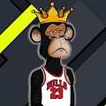 Baller Ape Legends OFFICIAL Baller Ape 传奇俱乐部是 10,010 个独特的 Baller Ape NFT 的集合——生活在以太坊区块链上的独特数字收藏品。您的 Baller Ape 会员资格授予会员专属福利，其中第一个是访问 THE FERRARI RAF
Baller Bananas NFTs Baller Bananas NFTs NFTs 在过去 7 天内售出 4 次。Baller Bananas NFT 的总销售额为 69.16 美元。Baller Bananas NFTs NFT 的平均价格为 17.3 美元。Baller Bananas NFT 拥有者 1,144 名，总共拥有
Baller Bear Billionaire Club 在这个限量版系列中，高级时装街头服饰与元宇宙相遇，仅 200 只 Baller Bears 摇摆着最热门的炒作服装。拥有 Baller Bear 可以让您对 Bear 的 IP 拥有独家所有权，您可以根据自己的
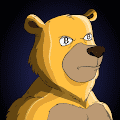 Baller Bears NFT Baller Bears NFT NFT 在过去 7 天内售出 10 次。Baller Bears NFT 的总销售额为 1.32 万美元。Baller Bears NFT NFT 的平均价格为 132.4 美元。Baller Bears NFT 拥有者有 1,192 名，总共
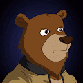 Baller Bears* 4,444 只古怪的熊🐻 每只熊质押每天都会产生 $HNY，兑换您的 $HNY 并铸造未来的收藏👀 每个特征都是手绘并描绘了当今的反文化。 我们将 Baller Bears 设想为一个全球性的
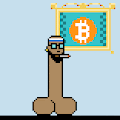 Ballin PickHeads Ballin' PickHeads #0 人们34 位业主 视图模块：共 69 个 能见度：483 次观看 最喜欢的21 个最爱 日程：销售将于 2022 年 12 月 18 日下午 4:38 GMT+8结束 Ballin' PickHeads #0 是 69 个版本的 N
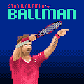 Ballman project Ballman 项目 NFT 在过去 7 天内售出 20 次。Ballman 项目的总销售额为 1.52 万美元。一个 Ballman 项目 NFT 的平均价格为 75.9 美元。Ballman 项目拥有者 2,656 名，总供应量
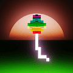 Balloon Kids Customs Special Delivery Balloon 的 HODLR 可以要求 Ruby da Great 定制设计的 Balloon Kid。 定制设计的范围从 0.007 到 0.015 ETH 多边形，具体取决于设计中要求的特征数量。 Ruby 才 9 岁，请耐心等待您的请求。我
Bally Gang OfficiaI Bally Gang NFT 是 8,888 个 NFT 的集合，包含现实生活和虚拟实用程序。在具有 300 多个 3D 特征的以太坊区块链上推出，每个 NFT 都是独一无二的。Bally Gang NFT 持有者是一个独
Bally Gang OfficiaI Bally Gang NFT 是 8,888 个 NFT 的集合，包含现实生活和虚拟实用程序。在具有 300 多个 3D 特征的以太坊区块链上推出，每个 NFT 都是独一无二的。Bally Gang NFT 持有者是一个独
Bally Gang OfficiaI Bally Gang NFT 是 8,888 个 NFT 的集合，包含现实生活和虚拟实用程序。在具有 300 多个 3D 特征的以太坊区块链上推出，每个 NFT 都是独一无二的。Bally Gang NFT 持有者是一个独
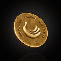 Banana Fund 香蕉基金/养老基金是我们感谢和回馈猩猩爷爷的方式。Grandpa Ape 代币是一种 NFT 代币，每月赠送给每个 Grandpa Ape 的钱包。这些代币将用于解锁不同级别的独
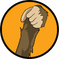 Banana Hands 手正是顾名思义 - 10,888 只猿手的集合，经过精心手工制作以匹配风格和属性，BAYC Apes 彻底改变并激发了以太坊区块链上 NFT 收藏品的增长和采用！手是对 BAYC 以及
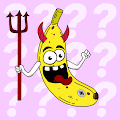 Banana Heist BH 是 1,428 个 Banana NFT 的集合，是生活在以太坊区块链上的独特数字收藏品。除了一些肮脏的猿类（或者可能是外星人？）吃掉它们之外，还有更多。加入调查，找出是
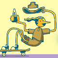 bananakin bunches 香蕉金在他自己的智能合约上的一系列版本。 香蕉金串 NFT - 常见问题（FAQ） ▶ 什么是香蕉串？ 香蕉金串是一个 NFT（非同质代币）集合。存储在区块链上
Banksy - Gorilla in a Pink Mask 班克斯最著名的街头壁画之一“戴粉红色面具的大猩猩”已被分割成 10,000 个部分，每个 NFT 代表它所画的墙壁部分。 这位艺术家的名声在于他从 1990 年代初开始创作的
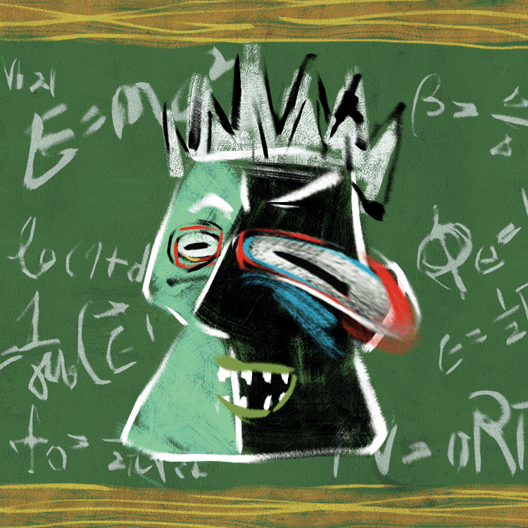 Banksy Culture 20,000 Banksy，为人民，支持文化，艺术创作的新脑波。 Banksy 文化 NFT - 常见问题（FAQ） ▶ 什么是班克斯文化？ Banksy Culture 是一个 NFT（非同质代币）集合。存储
Banned NFT BANNED 是一个生成艺术 NFT 项目，由 @JakeTheDegen、@iJmillz 和 @ChipWalkerNFT 的独特摄影作品播种。这是一个宣言，社区和伟大源于一个人在逆境中所做